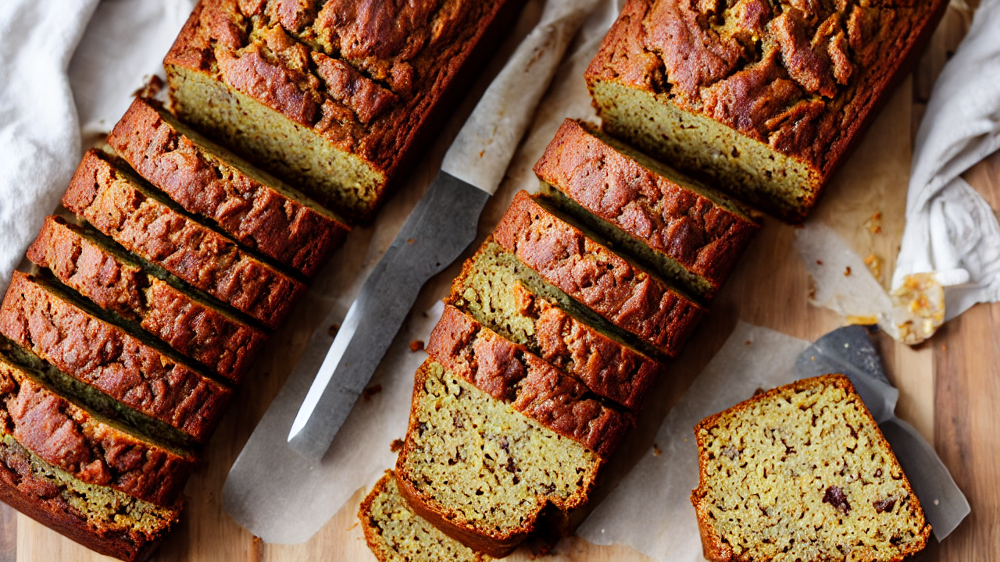
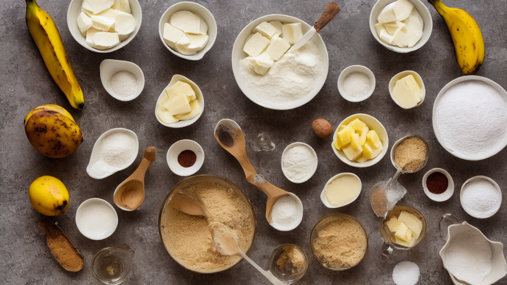
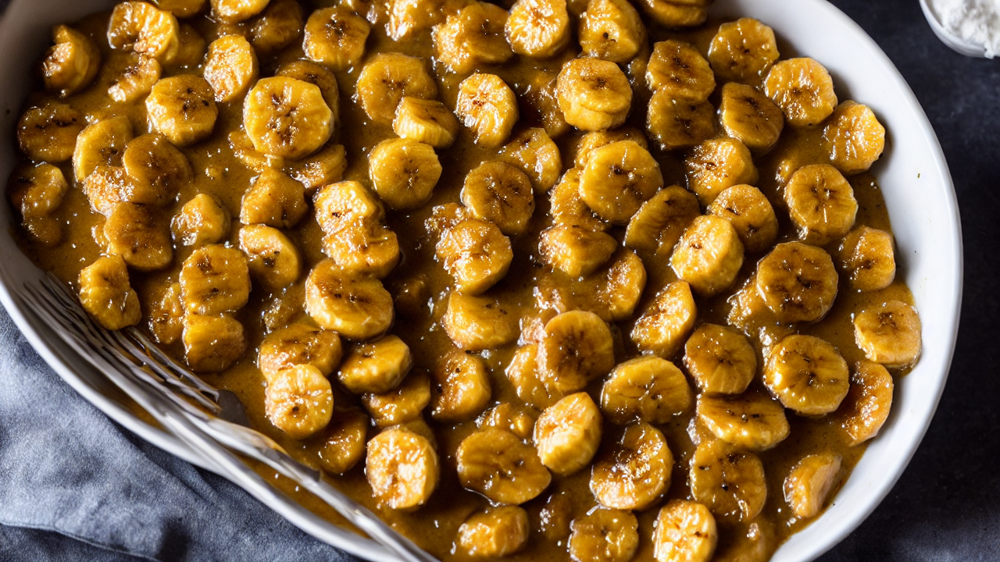
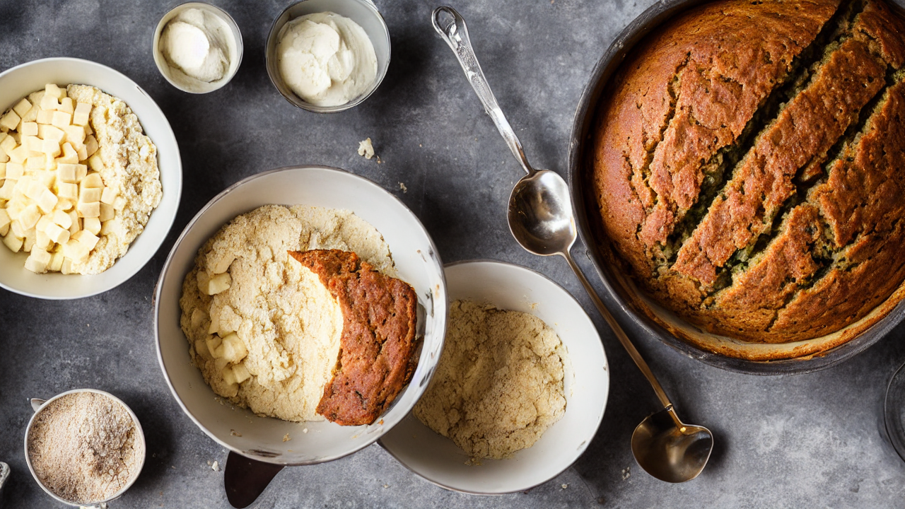
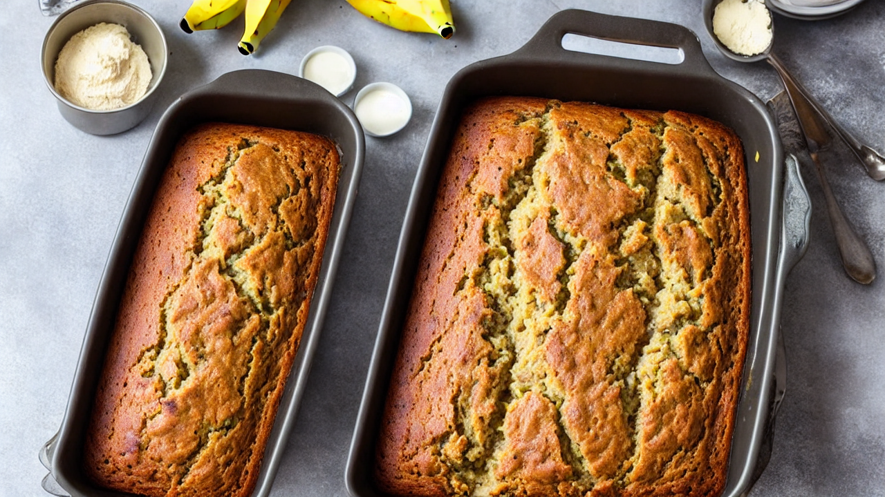
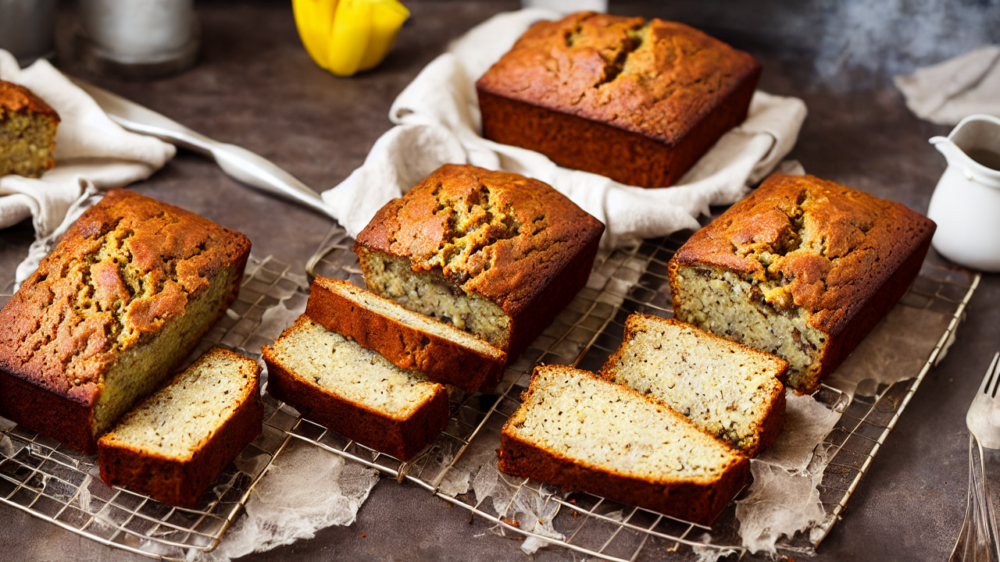
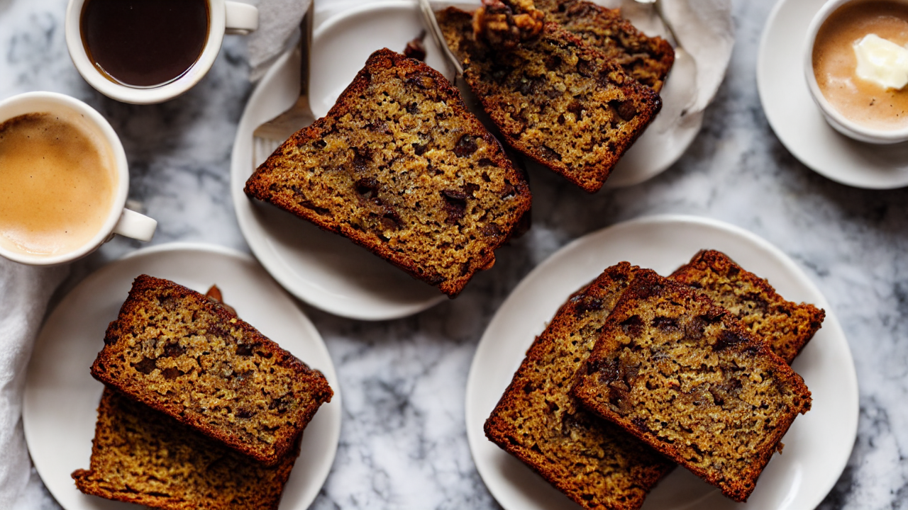

Easy Banana Bread | The BEST Moist & Fluffy Recipe!
Craving a comforting treat? This easy banana bread recipe is perfect for using up ripe bananas and creating a deliciously moist and fluffy loaf! It's a classic comfort food, perfect for breakfast, brunch, or a sweet snack – a trending recipe for baking enthusiasts!
Ingredients
- our ingredients! You'll need 3 ripe bananas
- 1/2 cup melted butter
- 3/4 cup sugar
- 2 eggs
- 1 teaspoon vanilla extract
- 1 1/2 cups all-purpose flour
- 1 teaspoon baking soda
- 1/2 teaspoon salt
- Make sure those bananas are *really* ripe – the spottier
- the better!
Instructions

Hey everyone, and welcome to the kitchen! Today we're making the ultimate comfort food: unbelievably moist and delicious banana bread. It’s so easy, even beginner bakers can nail it – let's get started!

Alright, let's gather our ingredients! You'll need 3 ripe bananas, 1/2 cup melted butter, 3/4 cup sugar, 2 eggs, 1 teaspoon vanilla extract, 1 1/2 cups all-purpose flour, 1 teaspoon baking soda, and 1/2 teaspoon salt. Make sure those bananas are *really* ripe – the spottier, the better!

First, let's mash those bananas in a large bowl until they're nice and smooth. Don't worry about a few small lumps – they actually add to the texture! Then, add in the melted butter and sugar and mix until everything is well combined.

Next, crack in those eggs and add a splash of vanilla extract. Mix everything together until it's smooth and creamy. This is where the magic starts to happen!

In a separate bowl, whisk together the flour, baking soda, and salt. This ensures everything is evenly distributed, resulting in a perfectly risen loaf. Now, gently fold the dry ingredients into the wet ingredients – don’t overmix!

Pour the batter into a greased loaf pan – I'm using a 9x5 inch pan. Spread it out evenly to ensure a uniform bake. Now it’s time for the oven!

Bake in a preheated oven at 350°F (175°C) for 50-60 minutes, or until a toothpick inserted into the center comes out clean. Let it cool in the pan for 10 minutes before transferring it to a wire rack to cool completely. The aroma is going to be incredible!
Once cooled, slice and serve! You can enjoy it plain, with a smear of butter, or even a dollop of cream cheese frosting. It’s perfect for breakfast, a snack, or even dessert.
And there you have it – the easiest, most delicious banana bread you’ll ever make! Remember, using super ripe bananas is key for the best flavor and moisture. Don’t forget to like and subscribe for more easy baking recipes!
Recommended Kitchen Essentials
Every great recipe starts with great tools. Here are our top picks to make cooking easier and more enjoyable:
Support Quick Bites Kitchen — When you purchase through our links, we may earn a small commission at no extra cost to you. This helps us keep creating free recipes for everyone. Thank you!